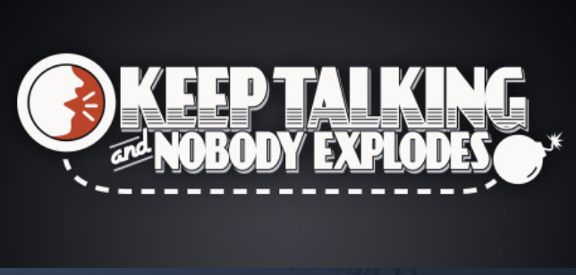

소개
'빵 터지는 대화'는 2인용 방탈출 보드 게임입니다.
각각 '폭탄 해체자'와 '폭탄 전문가' 되어서 한 명은 폭탄이 있는 밀실에 갇혀 제한 시간 내에 폭탄을 해체해야 하고, 다른 한명은 바깥에서 대화를 통해 그 사람이 폭탄을 해체하는 것을 도와야합니다.
단, 폭탄 해체 방법이 있는 '매뉴얼'은 바깥에 있는 사람에게만 주어지고, 이를 통해 폭탄 해체자는 제한 시간안에 폭탄에 있는 모든 퍼즐을 풀어야합니다.
제작 배경
친구들과 함께 원작 게임 Keep Talking and Nobody Explodes를 하다가 게임 속의 요소를 현실로 구현하고 싶어서 프로젝트를 시작하게 되었습니다. 메이커 페어의 사람들에게 즐거운 경험을 선사할 수 있을 것이라는 생각이 들어 참여형 컨텐츠로서 구성해 보았습니다.
아두이노와 각종 부품을 사용하여 폭탄 해체를 위한 퍼즐 요소들을 구현했습니다. 각 퍼즐들은 모듈 형식으로 되어서 랜덤으로 폭탄 케이스에 배치하고, 게임에 참여하는 팀에게 제공합니다.
게임 내용 소개
원작 게임 플레이 영상
게임 방법
각 폭탄에는 최대 6개의 모듈이 있으며, 이를 모두 꺼야한다. 각 모듈은 개별적으로 작동하며, 끄는 순서 역시 정해져있지 않다.
모듈을 해제하는 자세한 방법은 게임 시 제공되는 매뉴얼에 있다.
스트라이크
폭탄 해체자가 실수를 하면, 카운트다운 타이머의 위쪽 작은 화면에 스트라이크가 기록된다. 스트라이크 계기판이 있는 폭탄은 3개의 스트라이크가 기록되면 폭발한다. 스트라이크가 기록되면 카운트다운 타이머는 더 빠르게 흘러간다. 즉, 실수는 단 두번까지만 허용된다.
해제를 위한 정보들
모듈해제를 위한 설명중 일부는 '시리얼번호'와 같은 구체적인 특정사항을 요구한다. 이런 사항에 대한 정보는 폭탄 케이스의 위,아래,양옆에서 찾을 수 있다. 매뉴얼 부록 A,B,C에서 이러한 모듈들을 해제하는데 유용한 정보를 확인할수 있다.
섹션 1: 모듈
모듈에 오른쪽 위에는 LED가 있다. 이 LED에 녹색불이 들어오면 그것은 모듈이 해제되었음을 의미한다. 폭탄을 해체하기 위해서는 모든 모듈을 꺼야한다.
만약 모듈을 강제로 빼내거나 비정상 적인 방법으로 제거를 시도하면, 스트라이크가 기록되거나 바로 폭팔할 수 있다. 허튼 짓은 하지 않는게 좋다. 매뉴얼 대로 해체를 해야만 당신의 동료가 무사히 나갈 수 있을 것이다.